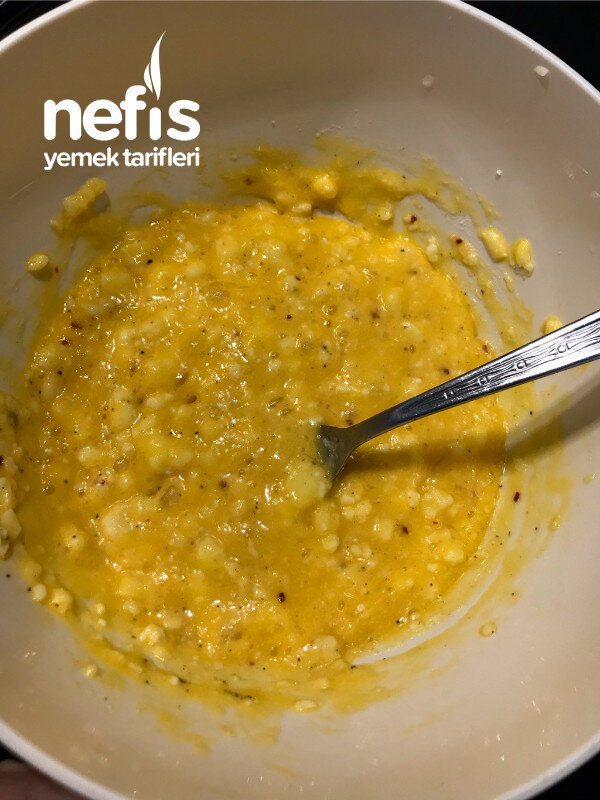

🍽️ 2-4 kişilik⏱️ Hazırlık: 5 dk🔥 Pişirme: 15 dk🏷️ Kahvaltılık Tarifler
Malzemeler
- Tulum peyniri
- Beyaz peynir
- Evde varsa başka peynir çeşitleri
- 3-4 yumurta
- İsteğe bağlı karabiber, pulbiber
- 1 tatlı kaşığı kadar zeytinyağı
Hazırlanışı
- Peynirler rendelenir. Karıştırılır.
- Bir bardak kadar peynir karışımına 3-4 yumurta kırılıp karıştırılır.
- İstenirse bir çay kaşığı pulbiber ve karabiber ilave edilir. İsteyen çörekotu da ilave edebilir.
- Tavaya sıvı yağ ilave edilip kapağı kapatılarak kısık ateşte birkaç dakika ısıtılır.
- Peynir karışımı tavaya dökülüp biraz tavayı sallayarak eşit dağıtılır.
- Kapağı kapatılarak pişirilir.
- Omletin üzerinin sıvı görünümü gidince pişmiş demektir.
- Kişi sayısına göre bölünerek servis yapılır.